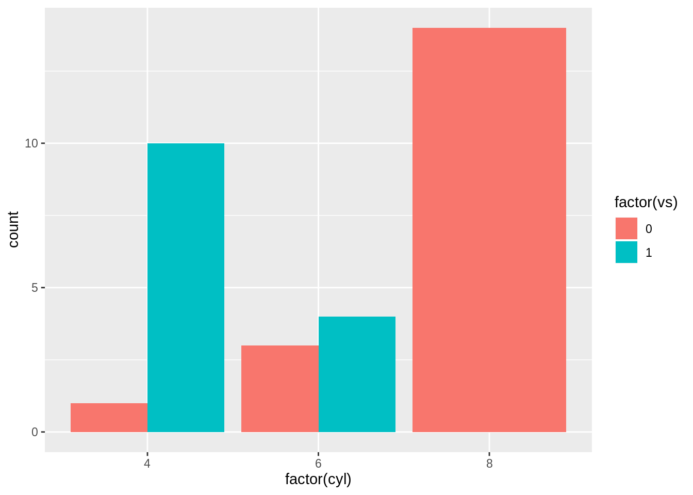
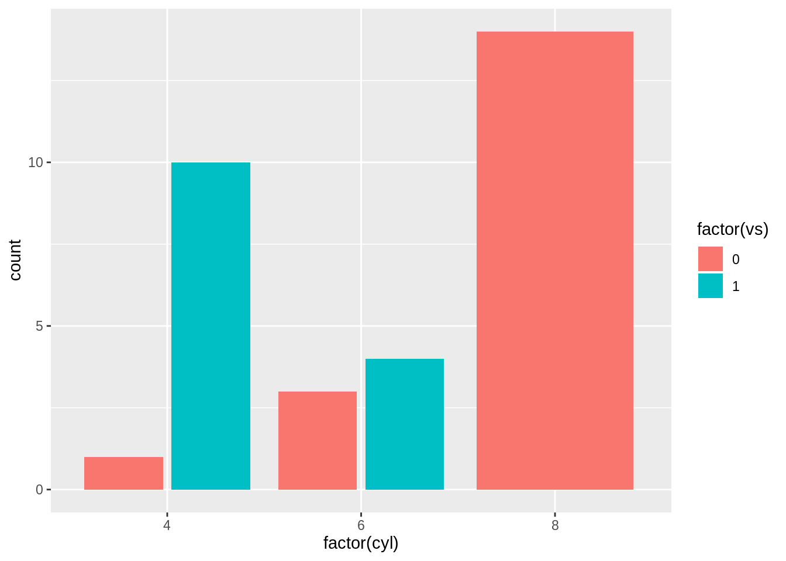

Chapter 8 Design a how-to
We define a “how-to” as a step-by-step recipe for a specific problem; light on narrative and teaching “why”. R Markdown is a great tool for this kind of lesson, and we recommend (surprise!) HTML output with the following options.
8.1 Share the source code
You can also make it easy for others to download the raw R Markdown file that produced the page on the your site that they’re viewing.
- Add
code_download: trueunderneathhtml_document:. This particular YAML option is one that you might consider only applying to.Rmdfiles where it’s relevant (in which case, you would include in the.Rmd’s YAML and not the_site.yml.)

8.4 Code Folding
If you have a lot of code chunks, and you want to option for them to expand or fold with a click then:
- Add
code_folding:as an option underneathhtml_document:. The options are eithershoworhide, depending on whether or not you want code chunks to be expanded by default.

8.5 Show code, hide results
The default global chunk option is echo=TRUE, which means that by default all code in code chunks is printed in the output. But sometimes you may want to suppress the output for pedagogical reasons on individual code chunks. You could set eval = FALSE as a global chunk option, but this would mean that all the code chunks will not get evaluated at all. Thus, you could have errors in your code that learners could stumble upon. Instead, we suggest setting results='hide' as a global chunk option to ensure that when you knit, you’ll run into the same errors your learners will before they do.
```{r, results='hide'}
library(tidyverse)
glimpse(starwars)
```8.6 Show code, hide plots
If your code produces plots, though, results='hide' will not suppress the plot. To suppress printing a plot, you’ll need to use fig.show='hide'.
```{r, results='hide', fig.show='hide'}
library(tidyverse)
glimpse(starwars)
ggplot(starwars, aes(x = height)) +
geom_histogram(colour = "white", fill = "#3fb5bd") +
theme_minimal()
```8.7 Show results, hide code
Sometimes you may want to shield your learners from all the code and just focus their attention on the output, whether it is printed or it produced a plot. This requires a single switch to echo=FALSE to “mute” the code from being output.
```{r, echo=FALSE}
library(tidyverse)
glimpse(starwars)
```This is all the learner sees:
## Observations: 87
## Variables: 13
## $ name <chr> "Luke Skywalker", "C-3PO", "R2-D2", "Darth Vader", "L…
## $ height <int> 172, 167, 96, 202, 150, 178, 165, 97, 183, 182, 188, …
## $ mass <dbl> 77.0, 75.0, 32.0, 136.0, 49.0, 120.0, 75.0, 32.0, 84.…
## $ hair_color <chr> "blond", NA, NA, "none", "brown", "brown, grey", "bro…
## $ skin_color <chr> "fair", "gold", "white, blue", "white", "light", "lig…
## $ eye_color <chr> "blue", "yellow", "red", "yellow", "brown", "blue", "…
## $ birth_year <dbl> 19.0, 112.0, 33.0, 41.9, 19.0, 52.0, 47.0, NA, 24.0, …
## $ gender <chr> "male", NA, NA, "male", "female", "male", "female", N…
## $ homeworld <chr> "Tatooine", "Tatooine", "Naboo", "Tatooine", "Alderaa…
## $ species <chr> "Human", "Droid", "Droid", "Human", "Human", "Human",…
## $ films <list> [<"Revenge of the Sith", "Return of the Jedi", "The …
## $ vehicles <list> [<"Snowspeeder", "Imperial Speeder Bike">, <>, <>, <…
## $ starships <list> [<"X-wing", "Imperial shuttle">, <>, <>, "TIE Advanc…8.8 Interactively hide/show code
whole document
8.9 Hide everything
Useful for you as you develop a lesson sometimes to save your code but hide the code and all output from learners. You can achieve the same thing with the combination of echo=FALSE, results='hide', fig.show='hide'. But the easier way is to use the include chunk option, which is by default set to TRUE.
```{r, include=FALSE}
library(tidyverse)
glimpse(starwars)
```8.10 Reuse your code
Once you embrace code chunk options, you may often find yourself copying and pasting code chunks so that you can use different options on the same code chunk. Like maybe you want the code to appear once, but you
Special use case: plot first, code second
Chunk 1: {r plot-first, echo = FALSE}
Chunk 2: {r ref.label = 'plot-first', eval = FALSE}8.11 Two plots side-by-side
ggplot(mtcars, aes(factor(cyl), fill = factor(vs))) +
geom_bar(position = position_dodge(preserve = "total"))
ggplot(mtcars, aes(factor(cyl), fill = factor(vs))) +
geom_bar(position = position_dodge2(preserve = "total"))
8.12 Include verbatim code chunks
You may have noticed that the code chunk output, even when echo=TRUE, does not show the actual code chunk options that you see in your .Rmd file. In order to print the full code chunk, you’ll need to
knitrref.label to reuse code chunks- the
fig.paththing: https://yihui.name/knitr/options/#plots (see also: name your code chunks!) - making sure that your package warnings/messages don’t print!
- how to control numbers of digits that print
control significance stars